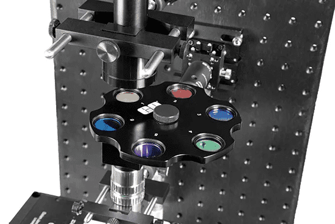

滤光片
这个想必不需要介绍是什么玩意了，选择性透过或阻挡特定波长范围的光。
原理：有多种类型
滤光片通过材料特性或结构设计，对入射光进行波长选择：
-
吸收型滤光片
- 材料本身对某些波长的光有强吸收，而对其他波长的光透过率较高。
-
示例：有色玻璃（如红色玻璃吸收蓝绿光，透过红光）。
-
干涉型滤光片
- 利用光的干涉效应，通过多层薄膜（介质膜或金属膜）的反射和透射叠加，增强或削弱特定波长的光。
-
关键：薄膜厚度通常为目标波长的¼或其倍数。
-
示例：窄带滤光片（用于激光或光谱仪）。
-
反射/散射型滤光片
- 通过反射或散射去除不需要的波长，如金属反射膜滤光片。
-
二向色滤光片
- 将光按波长分离为透射和反射两部分（例如分光镜）。
常见的是干涉滤光片
是的，在现代中高端光学应用中，干涉型滤光片是最常见、应用最广泛的技术。尤其是对于性能要求较高的领域，它们几乎已成为标准选择。
可以这样理解：
- 基础、简单的应用：可能会使用吸收型滤光片（如彩色玻璃），因为它成本低、坚固耐用。
- 高性能、精密的光学系统：绝大多数依赖干涉型滤光片，因为它能实现吸收型无法达到的关键性能。
为什么干涉型滤光片如此常见和重要？
-
性能卓越，设计灵活
- 任意光谱形状：通过精确设计多层薄膜的厚度和折射率，可以制造出带通、长波通、短波通、陷波等几乎所有光谱形状的滤光片。
- 极高的透过率和截止深度：可以在目标波段实现 >95% 的高透射率，同时在阻挡波段实现极高的光密度（如 OD 6，即只透过百万分之一的光），这是吸收型难以企及的。
- 陡峭的过渡边缘：光谱的“截止边”可以做得非常陡峭，实现精确的波长分离。
-
材料限制的突破
- 吸收型滤光片依赖于能找到的、具有特定吸收特性的材料。而干涉型滤光片主要使用常见的光学薄膜材料（如二氧化硅、二氧化钛、氟化镁等），通过结构设计来实现功能，不受天然材料吸收特性的限制。
与吸收型滤光片的对比
| 特性 | 干涉型滤光片 | 吸收型滤光片 |
|---|---|---|
| 原理 | 光的干涉效应（多层薄膜） | 材料对光的本征吸收 |
| 常见形式 | 表面镀有复杂介质膜的玻璃或光学基片 | 有色玻璃或染色塑料 |
| 优点 | 1. 光谱性能极佳（高透过、深截止、边缘陡） 2. 设计灵活，可实现任意波形 3. 热稳定性通常较好 |
1. 成本低 2. 坚固耐用，不易刮伤镀膜 3. 入射角敏感性低，光谱不易偏移 4. 无二次反射鬼影 |
| 缺点 | 1. 成本高（尤其是窄带滤光片） 2. 镀膜易划伤，需小心保护 3. 角度敏感，倾斜入射会导致中心波长蓝移 4. 可能存在微弱的通带外泄漏 |
1. 光谱性能受限（边缘不陡，截止不深） 2. 高透过与深截止难以兼得 3. 可能受温度影响（某些玻璃） 4. 可选波长受材料限制 |
| 典型应用 | 荧光成像、光谱分析、激光系统、精密仪器 | 舞台灯光、简易传感器、防护眼镜、低成本消费电子 |
结论
所以，当人们谈论“滤光片”时，尤其是在科技、科研和工业成像的语境下，默认指的就是干涉型滤光片，因为它是实现复杂和精密光学功能的核心技术。而吸收型滤光片则更多地用于对性能要求不高、但需要低成本和高可靠性的场合。
简单来说：干涉型是“精密工具”，吸收型是“基础零件”。前者虽然更常见于高端应用，但后者凭借其独特的优势，在特定领域同样不可或缺。
干涉滤光片的细节
我们可以用一个逐步深入的模型来理解：
核心思想：用干涉来控制反射和透射
干涉型滤光片不是“吸收”掉不需要的光，而是通过精巧的结构，让不需要的光被反射回去（或相互抵消），只让需要的光透射过去。
第一步：从单层膜到基本原理
想象一束光垂直照射到一片涂有透明薄膜的玻璃上。光会在空气-薄膜界面和薄膜-玻璃界面发生反射。
- 如果薄膜的光学厚度（物理厚度 × 折射率）恰好是目标波长 λ 的 ¼，那么从这两个界面反射回来的两束光，其光程差就是 λ/2（因为一去一回）。
- 光程差为半波长的奇数倍会导致相消干涉。因此，这两个反射光波会相互抵消。
- 根据能量守恒，反射光被抵消了，能量就必须去到别处——这里就是极大地增强了透射光。
这就是最简单的单层增透膜的原理：它让某个波长的反射最小，透射最大。反之，如果设计成让反射光相长干涉，就成了反射膜。
第二步：构建多层膜“干涉仪”
实际滤光片是由几十甚至上百层高折射率材料和低折射率材料交替镀制而成。你可以把它想象成一系列精密耦合的“法布里-珀罗干涉仪”。
关键设计：
- 间隔层：通常由光学厚度为 λ/2 的低折射率材料充当。它像一个“共振腔”，允许特定波长的光在其中来回反射，并最终同相位地透射出去，形成透射峰。
- 反射堆栈：在间隔层的两侧，是由多个 λ/4 膜层组成的分布式布拉格反射镜。这些反射堆栈就像两面高反射率的镜子，将除了共振波长以外的光高效地反射回去。
总结
干涉型滤光片的滤光，是一个主动的、基于波动性的选择过程：
- 它不是被动吸收，而是主动利用干涉效应进行能量再分配。
- 核心结构是“高反射镜-共振腔-高反射镜”。
- 透射源于共振腔内的相长干涉（能量累积并耦合输出）。
- 阻挡源于非共振光的相消干涉和高反射镜的反射。
这种原理使得干涉滤光片能够实现极高透射率、极深阻带和极陡边缘的性能，这正是现代精密光学系统所必需的。
注意：并不是增加透射光的能量
问：反射光被抵消了，能量就必须去到别处——这里就是极大地增强了透射光。这句话如何理解，我认为似乎是透射的总能量并没有增加，只是由于反射抵消，从而透射光占比增加？
答：您的理解是完全正确且非常到位的。我原文的表述“极大地增强了透射光”在物理学上不够严谨，容易引起误解。更准确的说法是：透射光的比例（或强度）相对于无膜层时增加了，而总能量（入射光能量）保持不变。
其他说明
- 绝大多数滤光片是分方向的，使用时需要分清正反，其实这个也好理解，毕竟是多层膜。
- 一些细节滤光片：ND 滤光片、二向色型滤光片(./13.二向色型滤光片.md)。
装置
如图所示，切换滤光片的装置：
